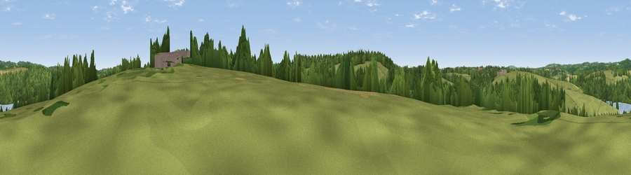

Viewpoint near Mawgan
#42993 in England · top 92% of its area beats it · near MawganThe view, rendered

A 360° render of this exact spot computed from the terrain model, tree cover and land cover — summer colours, afternoon light, calibrated against photographs of famous viewpoints. Real trees, hedges and buildings will differ in detail.
The panorama
Grey silhouette: terrain skyline in each direction (720 bearings, Earth curvature and refraction included). Dashed green: skyline with trees (+15 m) and buildings (+8 m) as obstacles. Blue strip: how far the ground is visible on each bearing.
Where the view opens
Wedge length = distance to the farthest visible ground on that bearing (vegetation-aware). Rings at 10, 25 and 50 km.
What fills the view
54% grassland · 36% woodland · 8% cropland · 1% water ·
Angular shares of the visible panorama (visual magnitude), not map area. Landscape diversity 0.43 (0–1 Shannon).
Key numbers
More beautiful places nearby
The staircase of upgrades: each row has a higher view potential than everything closer. Driving times are estimates from straight-line distance, calibrated against real road routing — check an actual route before setting out.
| Place | Direction | Drive | Score |
|---|---|---|---|
| Viewpoint near Mawgan | SSW · 1 km | ~3 min | 40.2 |
| Viewpoint near Constantine | N · 5 km | ~10 min | 66.7 |
| Viewpoint near Seworgan | N · 6 km | ~13 min | 67.1 |
| Viewpoint near St. Keverne | ESE · 6 km | ~13 min | 72.2 |
| Viewpoint near St. Keverne | ESE · 9 km | ~18 min | 72.5 |
| Viewpoint near Porthoustock | ESE · 9 km | ~19 min | 74.0 |
| Viewpoint near Ashton | WNW · 12 km | ~23 min | 81.3 |
| Tregonning Hill | WNW · 13 km | ~24 min | 83.0 |
50.08063, -5.18720 · source: screening · position refined by local search. Computed location — check access rights before visiting.